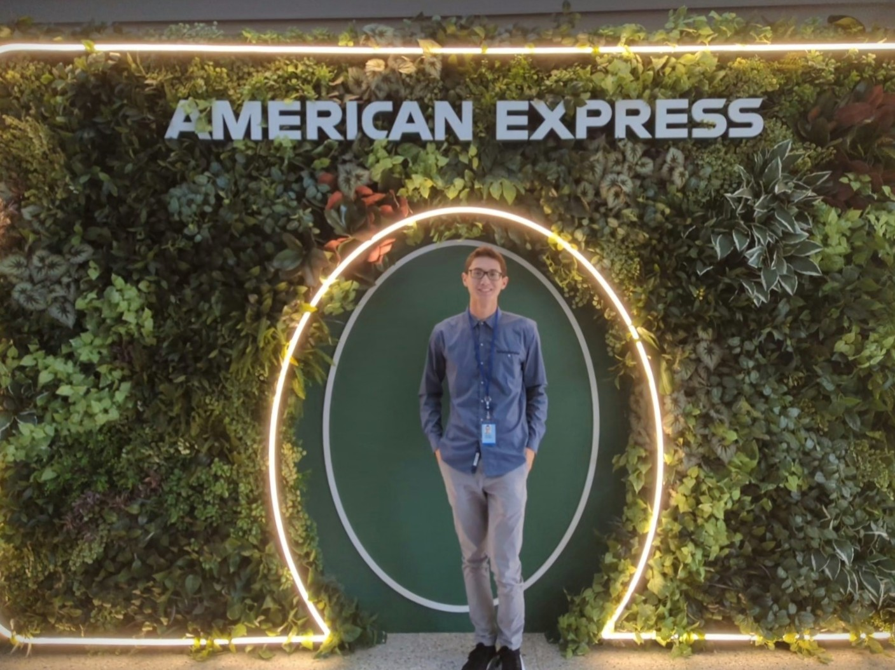

I have learned so much from my coworkers during my internships and I wanted to summarize my experience.
Internships

American Express
Summer 2023
Caterpillar
Summer 2022
American Express
During the summer of 2023 I worked with American Express in Phoenix, Arizona. As a full stack developer I worked on both the customer facing website and the APIs that support it. One of the projects I worked on at AMEX was to improve the User Interface for visitors with disabilities. For this project I completed training to be able to recognize potential issues, designed solutions to the issues, and then created the code to fix the issue improve the site. Throughout this project I got to explore the code base of a production website for a large organization and I got to work on real issues independently. I feel this has influenced my coursework at Iowa State. After working on a large website, I have a better understanding of what it means to write understandable and expandable code for other developers. This has helped me immensely in my group projects this semester. In my internship I also got the opportunity to participate in team standup meetings where I continue to see the importance of communication and that is something I have taken to my group projects as well.
Caterpillar
During the summer of 2022 I worked at Caterpillar in Peoria, IL. During my time at Caterpillar, I got learned how software fits into a large engineering and manufacturing company. One of the projects I worked on was focused more on the electrical/hardware side, where I created an automated test bench setup. Some of the design was created by my team, however as I became more familiar with the system I was able to improve it. This allowed me to apply the engineering knowledge and priciples I had learned during class to improve the usability of the test bench.